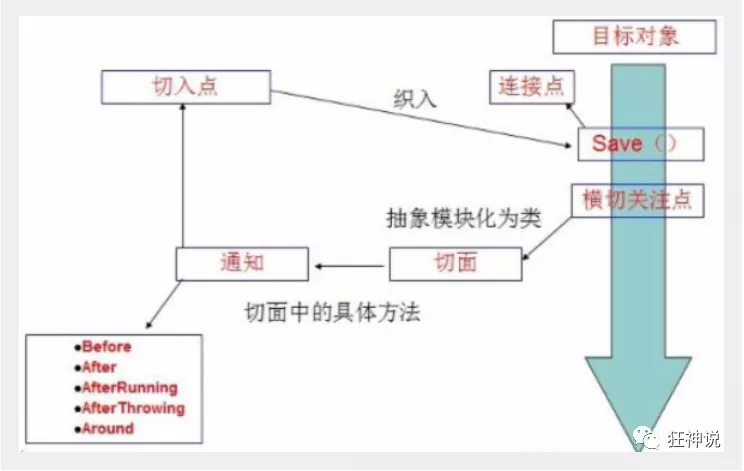
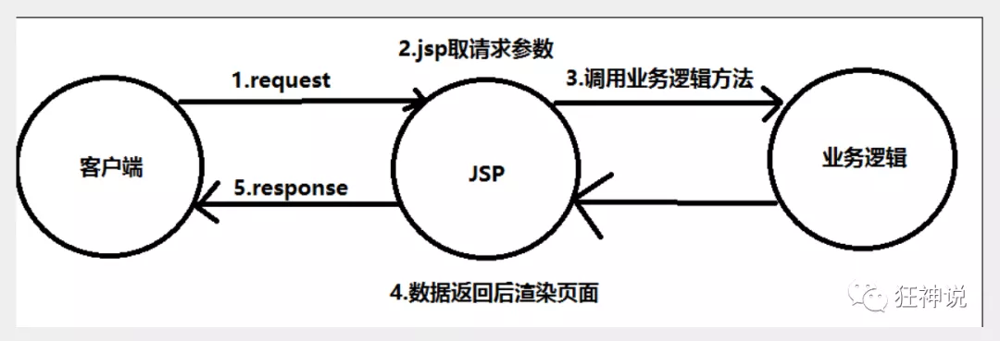
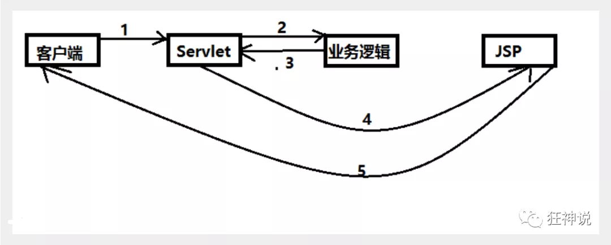
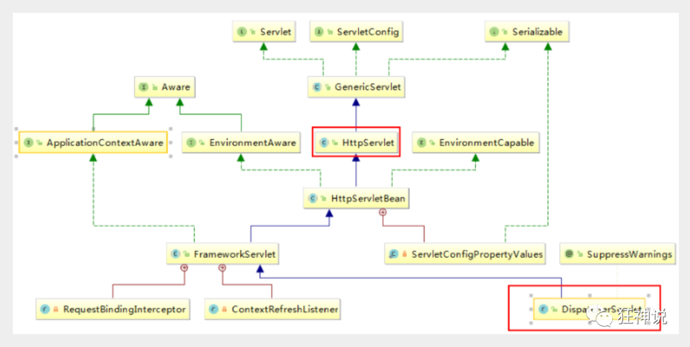
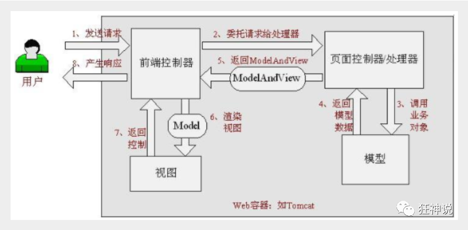
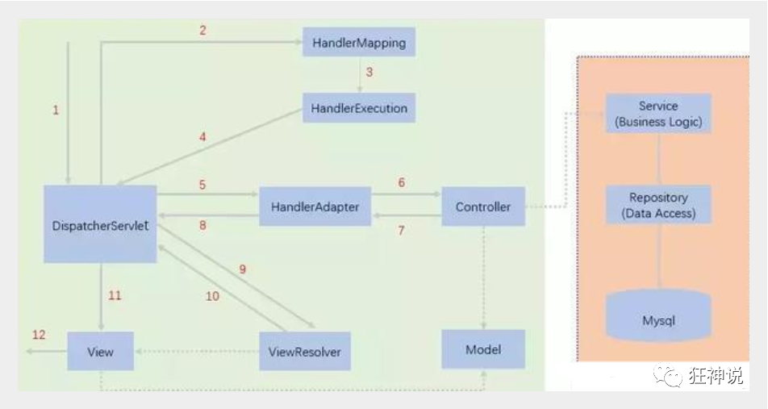
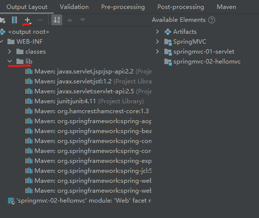

官方文档：https://docs.spring.io/spring-framework/docs/current/reference/html/web.html#spring-web
基于Spring实现的MVC轻量级Web框架
SSM: mybatis+Spring+SpringMVC
MVC三层架构
Java基础：认真学习，老师带，入门快
-
JavaSE
-
JavaWeb
框架：研究官方文档，锻炼官方文档，锻炼自学能力，锻炼笔记能力，锻炼项目能力
SpringMVC + Vue + SpringBoot + SpringCloud + Linux
SSM = JavaWeb项目
Sping: IOC和AOP
SpringMVC：SpringMVC的执行流程！
SpringMVC: SSM框架整合！
MVC：模型（dao, service）, 视图（jsp），控制器（Servlet）
1. 什么是SpringMVC
1、回顾MVC
1.1、什么是MVC
- MVC是模型(Model)、视图(View)、控制器(Controller)的简写，是一种软件设计规范。
- 是将业务逻辑、数据、显示分离的方法来组织代码。
- MVC主要作用是降低了视图与业务逻辑间的双向偶合。
- MVC不是一种设计模式，MVC是一种架构模式。当然不同的MVC存在差异。
**Model（模型）：**数据模型，提供要展示的数据，因此包含数据和行为，可以认为是领域模型或JavaBean组件（包含数据和行为），不过现在一般都分离开来：Value Object（数据Dao） 和 服务层（行为Service）。也就是模型提供了模型数据查询和模型数据的状态更新等功能，包括数据和业务。
**View（视图）：**负责进行模型的展示，一般就是我们见到的用户界面，客户想看到的东西。
**Controller（控制器）：**接收用户请求，委托给模型进行处理（状态改变），处理完毕后把返回的模型数据返回给视图，由视图负责展示。也就是说控制器做了个调度员的工作。
最典型的MVC就是JSP + servlet + javabean的模式。

1.2、Model1时代
- 在web早期的开发中，通常采用的都是Model1。
- Model1中，主要分为两层，视图层和模型层。

1.3、Model2时代
Model2把一个项目分成三部分，包括视图、控制、模型。

- 用户发请求
- Servlet接收请求数据，并调用对应的业务逻辑方法
- 业务处理完毕，返回更新后的数据给servlet
- servlet转向到JSP，由JSP来渲染页面
- 响应给前端更新后的页面
职责分析：
Controller：控制器
- 取得表单数据
- 调用业务逻辑
- 转向指定的页面
Model：模型
- 业务逻辑
- 保存数据的状态
View：视图
- 显示页面
Model2这样不仅提高的代码的复用率与项目的扩展性，且大大降低了项目的维护成本。Model 1模式的实现比较简单，适用于快速开发小规模项目，Model1中JSP页面身兼View和Controller两种角色，将控制逻辑和表现逻辑混杂在一起，从而导致代码的重用性非常低，增加了应用的扩展性和维护的难度。Model2消除了Model1的缺点。
1.4、回顾Servlet
- 新建一个Maven工程当做父工程！pom依赖！
1 | <dependencies> |
- 建立一个Moudle：springmvc-01-servlet ， 添加Web app的支持！
- 导入servlet 和 jsp 的 jar 依赖
1 | <dependency> |
- 编写一个Servlet类，用来处理用户的请求
1 | package com.ahulearn; |
- 编写Hello.jsp，在WEB-INF目录下新建一个jsp的文件夹，新建hello.jsp
1 | <%@ page contentType="text/html;charset=UTF-8" language="java" %> |
- 在web.xml中注册Servlet
1 |
|
- 配置Tomcat，并启动测试
- localhost:8080/user?method=add
- localhost:8080/user?method=delete
MVC框架要做哪些事情
- 将url映射到java类或java类的方法 .
- 封装用户提交的数据 .
- 处理请求--调用相关的业务处理--封装响应数据 .
- 将响应的数据进行渲染 . jsp / html 等表示层数据 .
说明：
常见的服务器端MVC框架有：Struts、Spring MVC、ASP.NET MVC、Zend Framework、JSF；常见前端MVC框架：vue、angularjs、react、backbone；由MVC演化出了另外一些模式如：MVP、MVVM 等等....
2. 什么是SpringMVC
2.1、概述
Spring MVC是Spring Framework的一部分，是基于Java实现MVC的轻量级Web框架。
查看官方文档：https://docs.spring.io/spring/docs/5.2.0.RELEASE/spring-framework-reference/web.html#spring-web
我们为什么要学习SpringMVC呢?
Spring MVC的特点：
- 轻量级，简单易学
- 高效 , 基于请求响应的MVC框架
- 与Spring兼容性好，无缝结合
- 约定优于配置
- 功能强大：RESTful、数据验证、格式化、本地化、主题等
- 简洁灵活
Spring的web框架围绕DispatcherServlet [ 调度Servlet ] 设计。
DispatcherServlet的作用是将请求分发到不同的处理器。从Spring 2.5开始，使用Java 5或者以上版本的用户可以采用基于注解形式进行开发，十分简洁；
正因为SpringMVC好 , 简单 , 便捷 , 易学 , 天生和Spring无缝集成(使用SpringIoC和Aop) , 使用约定优于配置 . 能够进行简单的junit测试 . 支持Restful风格 .异常处理 , 本地化 , 国际化 , 数据验证 , 类型转换 , 拦截器 等等......所以我们要学习 .
最重要的一点还是用的人多 , 使用的公司多 .
2.2、中心控制器
Spring的web框架围绕DispatcherServlet设计。DispatcherServlet的作用是将请求分发到不同的处理器。从Spring 2.5开始，使用Java 5或者以上版本的用户可以采用基于注解的controller声明方式。
Spring MVC框架像许多其他MVC框架一样, 以请求为驱动 , 围绕一个中心Servlet分派请求及提供其他功能，DispatcherServlet是一个实际的Servlet (它继承自HttpServlet 基类)。

SpringMVC的原理如下图所示：
当发起请求时被前置的控制器拦截到请求，根据请求参数生成代理请求，找到请求对应的实际控制器，控制器处理请求，创建数据模型，访问数据库，将模型响应给中心控制器，控制器使用模型与视图渲染视图结果，将结果返回给中心控制器，再将结果返回给请求者。

2.3、SpringMVC执行原理

图为SpringMVC的一个较完整的流程图；实线：表示SpringMVC框架提供的技术，不需要开发者实现；虚线：表示需要开发者实现。
简要分析执行流程
-
DispatcherServlet表示前置控制器，是整个SpringMVC的控制中心。用户发出请求，DispatcherServlet接收请求并拦截请求。
我们假设请求的url为 : http://localhost:8080/SpringMVC/hello
如上url拆分成三部分：
http://localhost:8080服务器域名
SpringMVC部署在服务器上的web站点
hello表示控制器
通过分析，如上url表示为：请求位于服务器localhost:8080上的SpringMVC站点的hello控制器。
-
HandlerMapping为处理器映射。DispatcherServlet调用HandlerMapping,HandlerMapping根据请求url查找Handler。
-
HandlerExecution表示具体的Handler,其主要作用是根据url查找控制器，如上url被查找控制器为：hello。
-
HandlerExecution将解析后的信息传递给DispatcherServlet,如解析控制器映射等。
-
HandlerAdapter表示处理器适配器，其按照特定的规则去执行Handler。
-
Handler让具体的Controller执行。
-
Controller将具体的执行信息返回给HandlerAdapter,如ModelAndView。
-
HandlerAdapter将视图逻辑名或模型传递给DispatcherServlet。
-
DispatcherServlet调用视图解析器(ViewResolver)来解析HandlerAdapter传递的逻辑视图名。
-
视图解析器将解析的逻辑视图名传给DispatcherServlet。
-
DispatcherServlet根据视图解析器解析的视图结果，调用具体的视图。
-
最终视图呈现给用户。
在这里先听一遍原理，不理解没有关系，我们马上来写一个对应的代码实现大家就明白了，如果不明白，那就写10遍，没有笨人，只有懒人！
2 . 第一个MVC程序
IDEA shfit+shfit打开类搜索：
在上一节中，我们讲解了 什么是SpringMVC以及它的执行原理！
现在我们来看看如何快速使用SpringMVC编写我们的程序吧！
2.1 配置版
1、新建一个普通Moudle ， springmvc-02-hello ， 右键Add Framework support添加web的支持！
2、确定导入了SpringMVC 的依赖！
3、配置web.xml ， 注册DispatcherServlet
1 |
|
- 编写SpringMVC 的 配置文件！名称：springmvc-servlet.xml : [servletname]-servlet.xml
说明，这里的名称要求是按照官方来的
1 |
|
- 添加 处理映射器 可以不添加会使用默认的
1 | <bean class="org.springframework.web.servlet.handler.BeanNameUrlHandlerMapping"/> |
- 添加 处理器适配器 可以不添加会使用默认的
1 | <bean class="org.springframework.web.servlet.mvc.SimpleControllerHandlerAdapter"/> |
- 添加 视图解析器
1 | <!--视图解析器:DispatcherServlet给他的ModelAndView,其他模板引擎 Thymeleaf Freemarker ...--> |
总的结构：
1 |
|
8、编写我们要操作业务Controller ，要么实现Controller接口，要么增加注解；需要返回一个ModelAndView，装数据，封视图；
1 | package com.ahulearn.controller; |
9、将自己的类交给SpringIOC容器，注册bean
1 | <!--Handler：配置了地址与类的映射，相当于原来的mapping--> |
10、写要跳转的jsp页面，显示ModelandView存放的数据，以及我们的正常页面；
1 | <%@ page contentType="text/html;charset=UTF-8" language="java" %> |
11、配置Tomcat 启动测试！
问题：可能遇到的问题：访问出现404，排查步骤：
- 查看控制台输出，看一下是不是缺少了什么jar包。
- 如果jar包存在，显示无法输出，就在IDEA的项目发布中，添加lib依赖！
- 重启Tomcat 即可解决
解决方法1：File->Project Structure->Project Settings->Artifacts->选择tomcat打包的的模块->右侧Output Layout->WEB-INF->新建lib文件夹，点击+号添加依赖

解决方法2：参考地址：(2条消息) idea中的Maven项目没有lib的解决方案_佐月儿-CSDN博客_idea 没有lib
不用新建lib文件夹，直接右键右侧的项目，选择Put into Output Root
使用maven-wabapp框架构建子项目不会有此问题
2.2 注解版
1、新建一个Moudle，springmvc-03-hello-annotation 。添加web支持！
2、由于Maven可能存在资源过滤的问题，我们将配置完善
1 | <build> |
3、在pom.xml文件引入相关的依赖：主要有Spring框架核心库、Spring MVC、servlet , JSTL等。我们在父依赖中已经引入了！
4、配置web.xml
注意点：固定内容
1 |
|
/ 和 /* 的区别：< url-pattern > / </ url-pattern > 不会匹配到.jsp， 只针对我们编写的请求；即：.jsp 不会进入spring的 DispatcherServlet类 。< url-pattern > /* </ url-pattern > 会匹配 *.jsp，会出现返回 jsp视图 时再次进入spring的DispatcherServlet 类，导致找不到对应的controller所以报404错。
-
- 注意web.xml版本问题，要最新版！
- 注册DispatcherServlet
- 关联SpringMVC的配置文件
- 启动级别为1
- 映射路径为 / 【不要用/*，会404】
5、添加Spring MVC配置文件
在resource目录下添加springmvc-servlet.xml配置文件，配置的形式与Spring容器配置基本类似，为了支持基于注解的IOC，设置了自动扫描包的功能，具体配置信息如下：
1 |
|
-
在视图解析器中我们把所有的视图都存放在/WEB-INF/目录下，这样可以保证视图安全，因为这个目录下的文件，客户端不能直接访问。
-
-
让IOC的注解生效
-
静态资源过滤 ：HTML . JS . CSS . 图片 ， 视频 .....
-
MVC的注解驱动
-
配置视图解析器
-
-
6、创建Controller
-
编写一个Java控制类：com.ahulearn.controller.HelloController , 注意编码规范
1 | package com.ahulearn.controller; |
-
- @Controller是为了让Spring IOC容器初始化时自动扫描到；
- @RequestMapping是为了映射请求路径，这里因为类与方法上都有映射所以访问时应该是/HelloController/hello；
- 方法中声明Model类型的参数是为了把Action中的数据带到视图中；
- 方法返回的结果是视图的名称hello，加上配置文件中的前后缀变成WEB-INF/jsp/hello.jsp。
7、创建视图层
在WEB-INF/ jsp目录中创建hello.jsp ， 视图可以直接取出并展示从Controller带回的信息；
可以通过EL表示取出Model中存放的值，或者对象；
1 | <%@ page contentType="text/html;charset=UTF-8" language="java" %> |
小结
实现步骤其实非常的简单：
- 新建一个web项目
- 导入相关jar包
- 编写web.xml , 注册DispatcherServlet
- 编写springmvc配置文件
- 接下来就是去创建对应的控制类 , controller
- 最后完善前端视图和controller之间的对应
- 测试运行调试.
使用springMVC必须配置的三大件：
处理器映射器、处理器适配器、视图解析器
通常，我们只需要手动配置视图解析器，而处理器映射器和处理器适配器只需要开启注解驱动即可，而省去了大段的xml配置
3. Controller配置
控制器Controller
-
控制器复杂提供访问应用程序的行为，通常通过接口定义或注解定义两种方法实现。
-
控制器负责解析用户的请求并将其转换为一个模型。
-
在Spring MVC中一个控制器类可以包含多个方法
-
在Spring MVC中，对于Controller的配置方式有很多种
实现Controller接口
Controller是一个接口，在org.springframework.web.servlet.mvc包下，接口中只有一个方法；
1 | //实现该接口的类获得控制器功能 |
只要实现了Controller接口的类，说明这就是一个控制器
测试
-
新建一个Moudle，springmvc-04-controller 。
-
配置web.xml
1
2
3
4
5
6
7
8
9
10
11
12
13
14
15
16
17
18
19
20
21
22
23
24
25
<web-app xmlns="http://xmlns.jcp.org/xml/ns/javaee"
xmlns:xsi="http://www.w3.org/2001/XMLSchema-instance"
xsi:schemaLocation="http://xmlns.jcp.org/xml/ns/javaee http://xmlns.jcp.org/xml/ns/javaee/web-app_4_0.xsd"
version="4.0">
<!--注册DispatchServlet-->
<servlet>
<servlet-name>springmvc</servlet-name>
<servlet-class>org.springframework.web.servlet.DispatcherServlet</servlet-class>
<!--通过初始化参数指定SpringMVC配置文件的位置，进行关联-->
<init-param>
<param-name>contextConfigLocation</param-name>
<param-value>classpath:springmvc-servlet.xml</param-value>
</init-param>
<!-- 启动顺序，数字越小，启动越早 -->
<load-on-startup>1</load-on-startup>
</servlet>
<servlet-mapping>
<servlet-name>springmvc</servlet-name>
<url-pattern>/</url-pattern>
</servlet-mapping>
</web-app> -
配置beans文件：springmvc-servlet.xml
1
2
3
4
5
6
7
8
9
10
11
12
13
14
15
16
17
18
19
20
21
22
23
24
25
26
27
28
29
30
31
<beans xmlns="http://www.springframework.org/schema/beans"
xmlns:xsi="http://www.w3.org/2001/XMLSchema-instance"
xmlns:context="http://www.springframework.org/schema/context"
xmlns:mvc="http://www.springframework.org/schema/mvc"
xsi:schemaLocation="http://www.springframework.org/schema/beans
http://www.springframework.org/schema/beans/spring-beans.xsd
http://www.springframework.org/schema/context
https://www.springframework.org/schema/context/spring-context.xsd
http://www.springframework.org/schema/mvc
https://www.springframework.org/schema/mvc/spring-mvc.xsd">
<!-- 接口方式下方内容不需要添加 -->
<!--自动装配扫描地址-->
<context:component-scan base-package="com.ahulearn.controller"/>
<!-- 静态资源过滤 -->
<mvc:default-servlet-handler />
<!-- 开启mvc注解驱动 -->
<mvc:annotation-driven />
<!-- 接口方式上方内容不需要添加 -->
<!-- 视图解析器 : 模板引擎 ThymeLeaf Freemarker ... -->
<bean class="org.springframework.web.servlet.view.InternalResourceViewResolver"
id="internalResourceViewResolver">
<!-- 前缀 -->
<property name="prefix" value="/WEB-INF/jsp/" />
<!-- 后缀 -->
<property name="suffix" value=".jsp" />
</bean>
<bean name="/t1" class="com.ahulearn.controller.ControllerTest"/>
</beans> -
编写一个Controller类，ControllerTest
1
2
3
4
5
6
7
8
9
10
11
12
13
14
15
16
17
18
19
20
21package com.ahulearn.controller;
import org.springframework.web.servlet.ModelAndView;
import org.springframework.web.servlet.mvc.Controller;
import javax.servlet.http.HttpServletRequest;
import javax.servlet.http.HttpServletResponse;
//定义控制器
//注意点：不要导错包，导入的是Controller接口，重写方法；
public class ControllerTest implements Controller {
public ModelAndView handleRequest(HttpServletRequest httpServletRequest, HttpServletResponse httpServletResponse) throws Exception {
//返回一个模型视图对象
ModelAndView mv = new ModelAndView();
mv.addObject("msg","Test1Controller");
mv.setViewName("test");
return mv;
}
} -
编写完毕后，去Spring配置文件中注册请求的bean；name对应请求路径，class对应处理请求的类
1 | <bean name="/t1" class="com.ahulearn.controller.ControllerTest"/> |
- 编写前端test.jsp，注意在WEB-INF/jsp目录下编写，对应我们的视图解析器
1 | <%@ page contentType="text/html;charset=UTF-8" language="java" %> |
- 配置Tomcat运行测试，我这里没有项目发布名配置的就是一个 / ，所以请求不用加项目名，OK！
说明：
- 实现接口Controller定义控制器是较老的办法
- 缺点是：一个控制器中只有一个方法，如果要多个方法则需要定义多个Controller；定义的方式比较麻烦；
使用注解@Controller
四个相同的注解
1 | 组件 |
-
@Controller注解类型用于声明Spring类的实例是一个控制器（在讲IOC时还提到了另外3个注解）；
-
Spring可以使用扫描机制来找到应用程序中所有基于注解的控制器类，为了保证Spring能找到你的控制器，需要在配置文件中声明组件扫描。
1
2<!-- 自动扫描指定的包，下面所有注解类交给IOC容器管理 -->
<context:component-scan base-package="com.kuang.controller"/> -
增加一个ControllerTest2类，使用注解实现；
1
2
3
4
5
6
7
8
9
10
11
12
13
14
15
16
17
18
19
20
21package com.ahulearn.controller;
import org.springframework.stereotype.Controller;
import org.springframework.ui.Model;
import org.springframework.web.bind.annotation.RequestMapping;
//@Controller注解的类会注入到Spring中;
// 类中的方法如果返回值是String,并且具有可以跳转的页面,则会被视图解析器解析
public class ControllerTest2{
//映射访问路径
public String index(Model model){
//Spring MVC会自动实例化一个Model对象用于向视图中传值
model.addAttribute("msg", "ControllerTest2");
//返回视图位置
return "test";
}
} -
运行tomcat测试
可以发现，我们的两个请求都可以指向一个视图，但是页面结果的结果是不一样的，从这里可以看出视图是被复用的，而控制器与视图之间是弱偶合关系。
注解方式是平时使用的最多的方式！
4. RequestMapping
@RequestMapping
源码
1 |
|
-
在@Target中有两个属性，分别为 ElementType.METHOD 和 ElementType.TYPE ，也就是说 @RequestMapping 可以在方法和类的声明中使用。用于类上，表示类中的所有响应请求的方法都是以该地址作为父路径。
-
@RequestMapping 中的 value 和 path 属性（这两个属性作用相同，可以互换，如果仅有这一个属性，则可以省略）
-
可以看到注解中的属性除了 name() 返回的字符串，其它的方法均返回数组，也就是可以定义多个属性值，例如 value() 和 path() 都可以同时定义多个字符串值来接收多个URL请求
-
为了测试结论更加准确，我们可以加上一个项目名测试 myweb
-
只注解在方法上面
1
2
3
4
5
6
7
8
9
10
11
12package com.ahulearn.controller;
import org.springframework.stereotype.Controller;
import org.springframework.web.bind.annotation.RequestMapping;
public class ControllerTest3 {
public String test(){
return "test";
}
}访问路径：http://localhost:8080 / 项目名 / h1
-
同时注解类与方法
1
2
3
4
5
6
7
8
9
10
11
12
13package com.ahulearn.controller;
import org.springframework.stereotype.Controller;
import org.springframework.web.bind.annotation.RequestMapping;
public class TestController {
public String test(){
return "test";
}
}访问路径：http://localhost:8080 / 项目名/ admin /h1 , 需要先指定类的路径再指定方法的路径；
4.1 RestFul 风格
概念
Restful就是一个资源定位及资源操作的风格。不是标准也不是协议，只是一种风格。基于这个风格设计的软件可以更简洁，更有层次，更易于实现缓存等机制。
功能
资源：互联网所有的事物都可以被抽象为资源
资源操作：使用POST、DELETE、PUT、GET，使用不同方法对资源进行操作。
分别对应 添加、 删除、修改、查询。
传统方式操作资源 ：通过不同的参数来实现不同的效果！方法单一，post 和 get
http://127.0.0.1/item/queryItem.action?id=1 查询,GET
http://127.0.0.1/item/saveItem.action 新增,POST
http://127.0.0.1/item/updateItem.action 更新,POST
http://127.0.0.1/item/deleteItem.action?id=1 删除,GET或POST
使用RESTful操作资源 ：可以通过不同的请求方式来实现不同的效果！如下：请求地址一样，但是功能可以不同！
http://127.0.0.1/item/1 查询,GET
http://127.0.0.1/item 新增,POST
http://127.0.0.1/item 更新,PUT
http://127.0.0.1/item/1 删除,DELETE
学习测试
-
在新建一个类 RestFulController
1
2
3@Controller
public class RestFulController {
} -
在Spring MVC中可以使用 @PathVariable 注解，让方法参数的值对应绑定到一个URI模板变量上。
1
2
3
4
5
6
7
8
9
10
11
12
13
14
15
16
17
18
19
20
21package com.ahulearn.controller;
import org.springframework.stereotype.Controller;
import org.springframework.ui.Model;
import org.springframework.web.bind.annotation.PathVariable;
import org.springframework.web.bind.annotation.RequestMapping;
public class RestFulController {
//映射访问路径
public String index( int p1, int p2, Model model){
int result = p1+p2;
//Spring MVC会自动实例化一个Model对象用于向视图中传值
model.addAttribute("msg", "结果："+result);
//返回视图位置
return "test";
}
} -
思考：使用路径变量的好处？
-
- 使路径变得更加简洁；
- 获得参数更加方便，框架会自动进行类型转换。
- 通过路径变量的类型可以约束访问参数，如果类型不一样，则访问不到对应的请求方法，如这里访问是的路径是/commit/1/a，则路径与方法不匹配，而不会是参数转换失败。
我们来修改下对应的参数类型，再次测试
1 | package com.ahulearn.controller; |
使用method属性指定请求类型
用于约束请求的类型，可以收窄请求范围。指定请求谓词的类型如GET, POST, HEAD, OPTIONS, PUT, PATCH, DELETE, TRACE等
我们来测试一下：
-
增加一个方法
1
2
3
4
5
6
7
8//映射访问路径,表单提交POST请求
public String index2( int p1, int p2, Model model){
int result = p1+p2;
//Spring MVC会自动实例化一个Model对象用于向视图中传值
model.addAttribute("msg", "结果："+result);
return "test";
} -
我们使用浏览器地址栏进行访问默认是Get请求，会报错405：
另一种简洁的方式指定请求方法
1 |
5. 乱码问题
测试步骤：
1、我们可以在首页编写一个提交的表单
1 | <form action="/04/encoding/t1" method="post"> |
2、后台编写对应的处理类
1 | package com.ahulearn.controller; |
3、输入中文测试，发现乱码
表单填入中文，返回乱码
4、使用servlet的过滤
1 | package com.ahulearn.controller; |
- 设置后还是乱码
在提交页使用meta标签设置编码，可以让提交的数据正常
1 | <html> |
但是添加以下代码反而会再次变乱码
1 | <%@ page contentType="text/html;charset=UTF-8" language="java" %> |
分析二者的差别，未知
使用get方法则正常，后续分析post方法提交数据的编码方式
post方法如果不使用jsp的设置，会使用html实体传送数据
- 比如：
神火会转为：神火即utf-8编码的10进制实体表示 - 表示中全部在ASCII编码范围内，因此无论什么编码，都能保证内容正确
添加上面jsp的方法后则使用URLEncode方式对数据进行编码
- 神火的16进制编码为：%u795E%u706B，而URLEncode的结果是：%E7%A5%9E%E7%81%AB
- 参考W3School发现url编码使用的是ISO-8859-1编码：https://www.w3school.com.cn/charsets/ref_html_8859.asp，虽然html5推荐使用Unicode UTF-8，但作为html4的默认字符，ISO-8859依然作为url编码使用。
- 另一方面接受的数据并不是和编码结果完全相同，接受的数据是将每个汉字结果转为3个字节，即每个%后的两个字母作为一个字节保存。
java进行url编码：
1 | public static String getURLEncoderString(String str) { |
以前乱码问题使用过滤器解决 , 而SpringMVC给我们提供了一个过滤器 , 可以在web.xml中配置 .
修改了xml文件需要重启服务器！
1 | <filter> |
但是我们发现 , 有些极端情况下.这个过滤器对get的支持不好 .
处理方法 :
1、修改tomcat配置文件 ：设置编码！
1 | <Connector URIEncoding="utf-8" port="8080" protocol="HTTP/1.1" |
2、自定义过滤器
1 | package com.ahulearn.filter; |
这个也是我在网上找的一些大神写的，一般情况下，SpringMVC默认的乱码处理就已经能够很好的解决了！
然后在web.xml中配置这个过滤器即可！
乱码问题，需要平时多注意，在尽可能能设置编码的地方，都设置为统一编码 UTF-8！
6. JSON数据交互
什么是JSON？
- JSON(JavaScript Object Notation, JS 对象标记) 是一种轻量级的数据交换格式，目前使用特别广泛。
- 采用完全独立于编程语言的文本格式来存储和表示数据。
- 简洁和清晰的层次结构使得 JSON 成为理想的数据交换语言。
- 易于人阅读和编写，同时也易于机器解析和生成，并有效地提升网络传输效率。
在 JavaScript 语言中，一切都是对象。因此，任何JavaScript 支持的类型都可以通过 JSON 来表示，例如字符串、数字、对象、数组等。看看他的要求和语法格式：
- 对象表示为键值对，数据由逗号分隔
- 花括号保存对象
- 方括号保存数组
JSON 键值对是用来保存 JavaScript 对象的一种方式，和 JavaScript 对象的写法也大同小异，键/值对组合中的键名写在前面并用双引号 "" 包裹，使用冒号 : 分隔，然后紧接着值：
1 | {"name": "QinJiang"} |
很多人搞不清楚 JSON 和 JavaScript 对象的关系，甚至连谁是谁都不清楚。其实，可以这么理解：
JSON 是 JavaScript 对象的字符串表示法，它使用文本表示一个 JS 对象的信息，本质是一个字符串。
JSON 和 JavaScript 对象互转
要实现从JSON字符串转换为JavaScript 对象，使用 JSON.parse() 方法：
1 | let obj = JSON.parse('{"a": "Hello", "b": "World"}'); |
要实现从JavaScript 对象转换为JSON字符串，使用 JSON.stringify() 方法：
1 | let json = JSON.stringify({a: 'Hello', b: 'World'}); |
代码测试
1、新建一个module ，springmvc-05-json ， 添加web的支持
2、在web目录下新建一个 json-1.html ， 编写测试内容
1 | <html> |
3、在IDEA中使用浏览器打开，查看控制台输出！
Controller返回JSON数据
Jackson应该是目前比较好的json解析工具了
当然工具不止这一个，比如还有阿里巴巴的 fastjson 等等。
我们这里使用Jackson，使用它需要导入它的jar包；
1 | <!-- https://mvnrepository.com/artifact/com.fasterxml.jackson.core/jackson-core --> |
配置SpringMVC需要的配置
- web.xml：所有项目通用
1 |
|
- springmvc-servlet.xml：所有项目通用
1 |
|
我们随便编写一个User的实体类，然后我们去编写我们的测试Controller；
1 | package com.ahulearn.pojo; |
这里我们需要两个新东西，一个是@ResponseBody，一个是ObjectMapper对象，我们看下具体的用法
简单测试：
1 | package com.ahulearn.controller; |
6.1 Jackson
正式编写一个Controller；
1 | package com.ahulearn.controller; |
配置Tomcat ， 启动测试一下！
http://localhost:8080/05/json1
乱码解决：出现了乱码问题，我们需要设置一下他的编码格式为utf-8，以及它返回的类型；
通过@RequestMaping的produces属性来实现，修改下代码
1 |
|
再次测试， http://localhost:8080/05/json1 ， 乱码问题OK！
【注意：使用json记得处理乱码问题】
代码优化
乱码统一解决
上一种方法比较麻烦，如果项目中有许多请求则每一个都要添加，可以通过Spring配置统一指定，这样就不用每次都去处理了！
我们可以在springmvc的配置文件上添加一段消息StringHttpMessageConverter转换配置！
1 | <!-- 开启mvc注解驱动, 解决JSON乱码问题 --> |
直接返回json字符串，设置成不经过视图解析器的统一解决
类上的**@Controller** 注解改为 @RestController ，这样，类中的所有的方法都只会返回字符串，不用再每一个方法都添加@ResponseBody ！我们在前后端分离开发中，一般都使用 @RestController ，十分便捷！
1 |
|
启动tomcat测试，结果都正常输出！
- 测试集合或数组的JSON格式
增加一个新的方法
1 |
|
运行结果 : 十分完美，没有任何问题！
- 输出时间对象
增加一个新的方法
1 |
|
- 默认日期格式会变成一个数字，是1970年1月1日到当前日期的毫秒数！
- Jackson 默认是会把时间解析为timestamps形式
解决方案：取消timestamps形式 ， 自定义时间格式
1 | //使用jackson自定义时间格式，正常应该使用java基础包处理时间格式 |
运行结果 : 成功的输出了时间！
抽取为工具类
如果要经常使用的话，这样是比较麻烦的，我们可以将这些代码封装到一个工具类中；我们去编写下
1 | package com.ahulearn.utils; |
我们使用工具类，代码就更加简洁了！
1 | //使用自己的封装的方法输出数据 |
- JSON字符串转java对象
6.2 FastJson
fastjson.jar是阿里开发的一款专门用于Java开发的包，可以方便的实现json对象与JavaBean对象的转换，实现JavaBean对象与json字符串的转换，实现json对象与json字符串的转换。实现json的转换方法很多，最后的实现结果都是一样的。
fastjson 的 pom.xml依赖！
1 | <!--Json解析器：fastjson--> |
fastjson 三个主要的类：
JSONObject 代表 json 对象
- JSONObject实现了Map接口, 猜想 JSONObject底层操作是由Map实现的。
- JSONObject对应json对象，通过各种形式的get()方法可以获取json对象中的数据，也可利用诸如size()，isEmpty()等方法获取"键：值"对的个数和判断是否为空。其本质是通过实现Map接口并调用接口中的方法完成的。
JSONArray 代表 json 对象数组
- 内部是有List接口中的方法来完成操作的。
JSON代表 JSONObject和JSONArray的转化
- JSON类源码分析与使用
- 仔细观察这些方法，主要是实现json对象，json对象数组，javabean对象，json字符串之间的相互转化。
代码测试，我们新建一个FastJsonDemo 类
1 | package com.ahulearn.controller; |
这种工具类，我们只需要掌握使用就好了，在使用的时候在根据具体的业务去找对应的实现。和以前的commons-io那种工具包一样，拿来用就好了！
7. ssm整合
简单项目流程：需求分析-》设计数据库-》业务-》前端界面
环境要求
环境：
- IDEA
- MySQL 5.7.19
- Tomcat 9
- Maven 3.6
要求：
- 需要熟练掌握MySQL数据库，Spring，JavaWeb及MyBatis知识，简单的前端知识；
数据库环境
创建一个存放书籍数据的数据库表
1 | CREATE DATABASE `ssmbuild`; |
项目基本环境搭建
1、新建一Maven项目！ssmbuild ， 添加web的支持
2、导入相关的pom.xml依赖！
1 | <dependencies> |
3、Maven资源过滤设置
1 | <build> |
4、建立基本结构和配置框架！
-
com.example.pojo
-
com.example.dao
-
com.example.service
-
com.example.controller
-
mybatis-config.xml
1
2
3
4
5
6
7
<configuration>
</configuration> -
applicationContext.xml
1
2
3
4
5
6
7
<beans xmlns="http://www.springframework.org/schema/beans"
xmlns:xsi="http://www.w3.org/2001/XMLSchema-instance"
xsi:schemaLocation="http://www.springframework.org/schema/beans
http://www.springframework.org/schema/beans/spring-beans.xsd">
</beans>
整合Mybatis编写
1、数据库配置文件 database.properties
1 | jdbc.driver=com.mysql.jdbc.Driver |
2、IDEA关联数据库
3、编写MyBatis的核心配置文件
1 |
|
4、编写数据库对应的实体类 com.kuang.pojo.Books
使用lombok插件！
1 | package com.ahulearn.pojo; |
5、编写Dao层的 Mapper接口！
1 | package com.kuang.dao; |
6、编写接口对应的 Mapper.xml 文件。需要导入MyBatis的包；
1 |
|
7、编写Service层的接口和实现类
接口：
1 | package com.ahulearn.service; |
实现类：
1 | package com.ahulearn.service; |
OK，到此，底层需求操作编写完毕！
Spring层
1、配置Spring整合MyBatis，我们这里数据源使用c3p0连接池；
2、我们去编写Spring整合Mybatis的相关的配置文件；spring-dao.xml
1 |
|
3、Spring整合service层
1 |
|
Spring层搞定！再次理解一下，Spring就是一个大杂烩，一个容器！对吧！
SpringMVC层
1、web.xml
1 |
|
2、spring-mvc.xml
1 |
|
3、Spring配置整合文件，applicationContext.xml
1 |
|
配置文件，暂时结束！Controller 和 视图层编写
增删改查
1、BookController 类编写 ， 方法一：查询全部书籍
1 |
|
2、编写首页 index.jsp
1 | <%@ page language="java" contentType="text/html; charset=UTF-8" pageEncoding="UTF-8" %> |
3、书籍列表页面 allbook.jsp
1 | <%@ taglib prefix="c" uri="http://java.sun.com/jsp/jstl/core" %> |
4、BookController 类编写 ， 方法二：添加书籍
1 |
|
5、添加书籍页面：addBook.jsp
1 | <%@ taglib prefix="c" uri="http://java.sun.com/jsp/jstl/core" %> |
6、BookController 类编写 ， 方法三：修改书籍
1 |
|
7、修改书籍页面 updateBook.jsp
1 | <%@ taglib prefix="c" uri="http://java.sun.com/jsp/jstl/core" %> |
8、BookController 类编写 ， 方法四：删除书籍
1 |
|
配置Tomcat，进行运行！
到目前为止，这个SSM项目整合已经完全的OK了，可以直接运行进行测试！这个练习十分的重要，大家需要保证，不看任何东西，自己也可以完整的实现出来！
事务管理：
添加依赖
1 | <!--aop织入包--> |
编写配置spring-sevice.xml
头文件：
1 | xmlns:aop="http://www.springframework.org/schema/aop" |
切入
1 | <!--4. aop 事务织入--> |
8.Ajax研究
1、简介
-
AJAX = Asynchronous JavaScript and XML（异步的 JavaScript 和 XML）。
-
AJAX 是一种在无需重新加载整个网页的情况下，能够更新部分网页的技术。
-
Ajax 不是一种新的编程语言，而是一种用于创建更好更快以及交互性更强的Web应用程序的技术。
-
在 2005 年，Google 通过其 Google Suggest 使 AJAX 变得流行起来。Google Suggest能够自动帮你完成搜索单词。
-
Google Suggest 使用 AJAX 创造出动态性极强的 web 界面：当您在谷歌的搜索框输入关键字时，JavaScript 会把这些字符发送到服务器，然后服务器会返回一个搜索建议的列表。
-
就和国内百度的搜索框一样!
-
传统的网页(即不用ajax技术的网页)，想要更新内容或者提交一个表单，都需要重新加载整个网页。
-
使用ajax技术的网页，通过在后台服务器进行少量的数据交换，就可以实现异步局部更新。
-
使用Ajax，用户可以创建接近本地桌面应用的直接、高可用、更丰富、更动态的Web用户界面。
2、伪造Ajax
我们可以使用前端的一个标签来伪造一个ajax的样子。iframe标签
1、新建一个module ：sspringmvc-06-ajax ， 导入web支持！
2、编写一个 ajax-frame.html 使用 iframe 测试，感受下效果
1 | <!DOCTYPE html> |
3、使用IDEA开浏览器测试一下！
利用AJAX可以做：
- 注册时，输入用户名自动检测用户是否已经存在。
- 登陆时，提示用户名密码错误
- 删除数据行时，将行ID发送到后台，后台在数据库中删除，数据库删除成功后，在页面DOM中将数据行也删除。
- ....等等
3、jQuery.ajax
纯JS原生实现Ajax我们不去讲解这里，直接使用jquery提供的，方便学习和使用，避免重复造轮子，有兴趣的同学可以去了解下JS原生XMLHttpRequest ！
Ajax的核心是XMLHttpRequest对象(XHR)。XHR为向服务器发送请求和解析服务器响应提供了接口。能够以异步方式从服务器获取新数据。
jQuery 提供多个与 AJAX 有关的方法。
通过 jQuery AJAX 方法，您能够使用 HTTP Get 和 HTTP Post 从远程服务器上请求文本、HTML、XML 或 JSON – 同时您能够把这些外部数据直接载入网页的被选元素中。
jQuery 不是生产者，而是大自然搬运工。
jQuery Ajax本质就是 XMLHttpRequest，对他进行了封装，方便调用！
1 | jQuery.ajax(...) |
我们来个简单的测试，使用最原始的HttpServletResponse处理 , .最简单 , 最通用
1、配置web.xml 和 springmvc的配置文件，复制上面案例的即可 【记得静态资源过滤和注解驱动配置上】
1 |
|
2、编写一个AjaxController
1 |
|
3、导入jquery ， 可以使用在线的CDN ， 也可以下载导入
1 | <script src="https://code.jquery.com/jquery-3.1.1.min.js"></script> |
4、编写index.jsp测试
1 | <%@ page contentType="text/html;charset=UTF-8" language="java" %> |
5、启动tomcat测试！打开浏览器的控制台，当我们鼠标离开输入框的时候，可以看到发出了一个ajax的请求！是后台返回给我们的结果！测试成功！
4、Springmvc实现
实体类user
1 |
|
我们来获取一个集合对象，展示到前端页面
1 |
|
前端页面
1 | <%@ page contentType="text/html;charset=UTF-8" language="java" %> |
成功实现了数据回显！可以体会一下Ajax的好处！
5、注册提示效果
我们再测试一个小Demo，思考一下我们平时注册时候，输入框后面的实时提示怎么做到的；如何优化
我们写一个Controller
1 |
|
前端页面 login.jsp
1 | <%@ page contentType="text/html;charset=UTF-8" language="java" %> |
【记得处理json乱码问题】
测试一下效果，动态请求响应，局部刷新，就是如此！
6、获取baidu接口Demo
1 |
|
8.拦截器
1. 概述
SpringMVC的处理器拦截器类似于Servlet开发中的过滤器Filter,用于对处理器进行预处理和后处理。开发者可以自己定义一些拦截器来实现特定的功能。
**过滤器与拦截器的区别：**拦截器是AOP思想的具体应用。
过滤器
- servlet规范中的一部分，任何java web工程都可以使用
- 在url-pattern中配置了/*之后，可以对所有要访问的资源进行拦截
拦截器
- 拦截器是SpringMVC框架自己的，只有使用了SpringMVC框架的工程才能使用
- 拦截器只会拦截访问的控制器方法， 如果访问的是jsp/html/css/image/js是不会进行拦截的
2、自定义拦截器
那如何实现拦截器呢？
想要自定义拦截器，必须实现 HandlerInterceptor 接口。
1、新建一个Moudule ， springmvc-07-Interceptor ， 添加web支持
2、配置web.xml 和 springmvc-servlet.xml 文件
3、编写一个拦截器
1 | package com.kuang.interceptor; |
4、在springmvc的配置文件中配置拦截器
1 | <!--关于拦截器的配置--> |
5、编写一个Controller，接收请求
1 | package com.kuang.controller; |
6、前端 index.jsp
1 | <a href="${pageContext.request.contextPath}/interceptor">拦截器测试</a> |
7、启动tomcat 测试一下！
3、验证用户是否登录 (认证用户)
实现思路
1、有一个登陆页面，需要写一个controller访问页面。
2、登陆页面有一提交表单的动作。需要在controller中处理。判断用户名密码是否正确。如果正确，向session中写入用户信息。返回登陆成功。
3、拦截用户请求，判断用户是否登陆。如果用户已经登陆。放行， 如果用户未登陆，跳转到登陆页面
测试：
1、编写一个登陆页面 login.jsp
1 | <%@ page contentType="text/html;charset=UTF-8" language="java" %> |
2、编写一个Controller处理请求
1 | package com.kuang.controller; |
3、编写一个登陆成功的页面 success.jsp
1 | <%@ page contentType="text/html;charset=UTF-8" language="java" %> |
4、在 index 页面上测试跳转！启动Tomcat 测试，未登录也可以进入主页！
1 | <%@ page contentType="text/html;charset=UTF-8" language="java" %> |
5、编写用户登录拦截器
1 | package com.kuang.interceptor; |
6、在Springmvc的配置文件中注册拦截器
1 | <!--关于拦截器的配置--> |
7、再次重启Tomcat测试！
OK，测试登录拦截功能无误.
4、文件上传和下载
准备工作
文件上传是项目开发中最常见的功能之一 ,springMVC 可以很好的支持文件上传，但是SpringMVC上下文中默认没有装配MultipartResolver，因此默认情况下其不能处理文件上传工作。如果想使用Spring的文件上传功能，则需要在上下文中配置MultipartResolver。
前端表单要求：为了能上传文件，必须将表单的method设置为POST，并将enctype设置为multipart/form-data。只有在这样的情况下，浏览器才会把用户选择的文件以二进制数据发送给服务器；
对表单中的 enctype 属性做个详细的说明：
- application/x-www=form-urlencoded：默认方式，只处理表单域中的 value 属性值，采用这种编码方式的表单会将表单域中的值处理成 URL 编码方式。
- multipart/form-data：这种编码方式会以二进制流的方式来处理表单数据，这种编码方式会把文件域指定文件的内容也封装到请求参数中，不会对字符编码。
- text/plain：除了把空格转换为 "+" 号外，其他字符都不做编码处理，这种方式适用直接通过表单发送邮件。
1 | <form action="" enctype="multipart/form-data" method="post"> |
一旦设置了enctype为multipart/form-data，浏览器即会采用二进制流的方式来处理表单数据，而对于文件上传的处理则涉及在服务器端解析原始的HTTP响应。在2003年，Apache Software Foundation发布了开源的Commons FileUpload组件，其很快成为Servlet/JSP程序员上传文件的最佳选择。
- Servlet3.0规范已经提供方法来处理文件上传，但这种上传需要在Servlet中完成。
- 而Spring MVC则提供了更简单的封装。
- Spring MVC为文件上传提供了直接的支持，这种支持是用即插即用的MultipartResolver实现的。
- Spring MVC使用Apache Commons FileUpload技术实现了一个MultipartResolver实现类：
- CommonsMultipartResolver。因此，SpringMVC的文件上传还需要依赖Apache Commons FileUpload的组件。
文件上传
1、导入文件上传的jar包，commons-fileupload ， Maven会自动帮我们导入他的依赖包 commons-io包；
1 | <!--文件上传--> |
2、配置bean：multipartResolver
【注意！！！这个bena的id必须为：multipartResolver ， 否则上传文件会报400的错误！在这里栽过坑,教训！】
1 | <!--文件上传配置--> |
CommonsMultipartFile 的 常用方法：
- String getOriginalFilename()：获取上传文件的原名
- InputStream getInputStream()：获取文件流
- void transferTo(File dest)：将上传文件保存到一个目录文件中
我们去实际测试一下
3、编写前端页面
1 | <form action="/upload" enctype="multipart/form-data" method="post"> |
4、Controller
1 | package com.kuang.controller; |
5、测试上传文件，OK！
采用file.Transto 来保存上传的文件
1、编写Controller
1 | /* |
2、前端表单提交地址修改
3、访问提交测试，OK！
文件下载
文件下载步骤：
1、设置 response 响应头
2、读取文件 -- InputStream
3、写出文件 -- OutputStream
4、执行操作
5、关闭流 （先开后关）
代码实现：
1 |
|
前端
1 | <a href="/download">点击下载</a> |
测试，文件下载OK，大家可以和我们之前学习的JavaWeb原生的方式对比一下，就可以知道这个便捷多了!